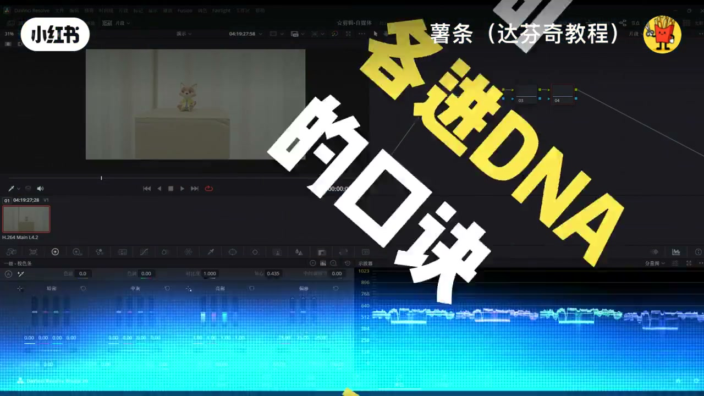
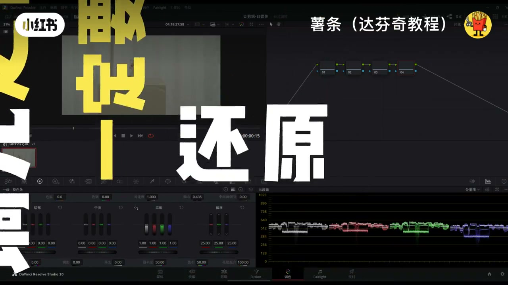
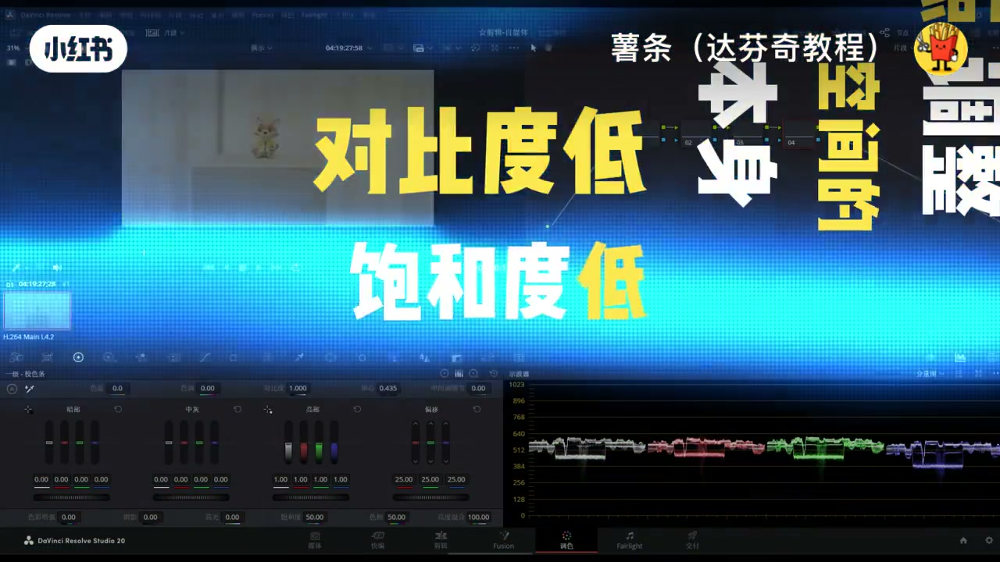
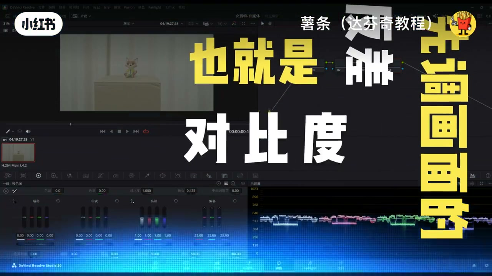
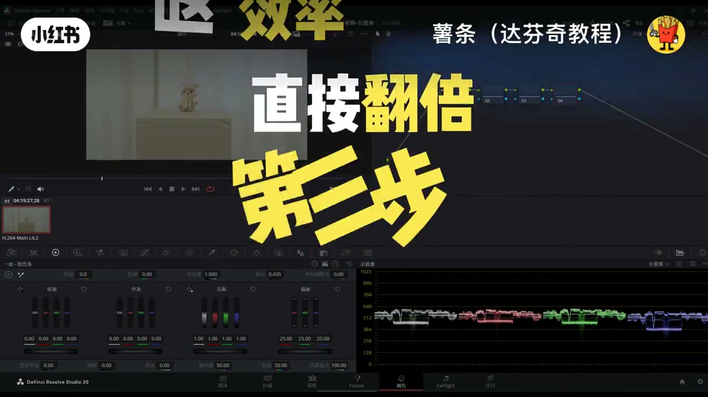
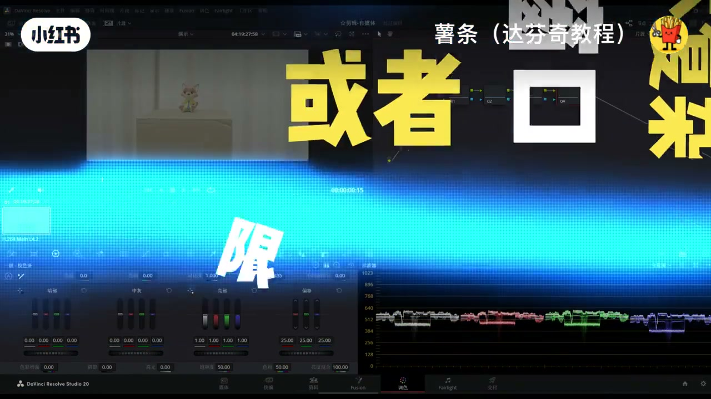
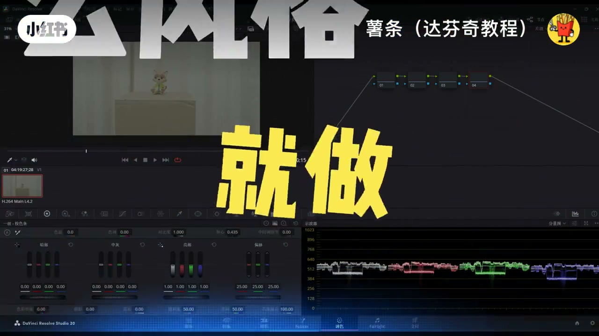
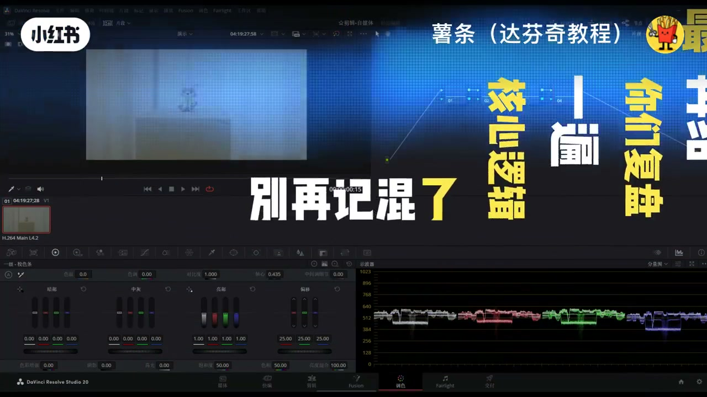

内容要点
「达芬奇调色万能公式🔥新手直接抄作业 新手」教程要点：达芬奇调色万能公式 → 新手学达芬奇调色,别再瞎堆节点,乱拉色轮了 → 很多人越调越脏,越调越乱,核心就是没找对思路 → 今天给你们一套万能调色公式…
知识结构
达芬奇调色万能公式
这一步做好才算真正开启调色
主体不够突出,就给主体加亮
- 达芬奇调色万能公式
- 新手学达芬奇调色,别再瞎堆节点,乱拉色轮了
- 很多人越调越脏,越调越乱,核心就是没找对思路
- 今天给你们一套万能调色公式
- 先记住三句各进DNA的口诀,再跟着四步走
达芬奇调色万能公式
00:00–01:28达芬奇调色万能公式
达芬奇调色万能公式；新手学达芬奇调色,别再瞎堆节点,乱拉色轮了；很多人越调越脏,越调越乱,核心就是没找对思路；今天给你们一套万能调色公式；先记住三句各进DNA的口诀,再跟着四步走；思路直接拉满,调色效率翻倍,新手也能零翻车；先把三句核心口诀记死,每一句都是避坑关键；一,节点顺序不等于你的工作顺序；别被节点从上到下的顺序绑死；它只是你的工具,不是你的操作枷锁；想补掉哪里,随时回头加节点,不用此刻一步到位；二,调色之前先调光,光影是画面的骨架；颜色是皮肉,骨架没立住,皮肉再好看也白搭；别上来就猛拉饱和度,色香；三,调光之前一定要先还原；这是调色的地基,地基打歪了；后面所有操作全白搭；接下来就跟着这四步走,一步都别乱；每一步都有明确目标,再也不会对这画面无从下手；第一步,先打地基,素材还原；只要你拍的是log灰片的素材；上来绝对不能直接调色；第一件事必须是把它还原成正常的REC 709色域画面；我知道很多新手着急出效果；拿着灰片就硬拉颜色,这绝对是大忌；灰片是前期给后期留调整空间的；本身对比度低,饱和度低,画面灰蒙蒙的；你在这个基础上调,眼睛根本判断不准颜色；调出来的东西放到手机、电视上,直接偏色翻车；这一步超简单；打分期里直接用官方对应的还原LUT；或者用色彩管理里的还原设置；一步就能把画面拉回正常人眼看着舒服的正常状态；明暗、颜色都回归基准


01:27–02:41这一步做好才算真正开启调色
这一步做好才算真正开启调色；第二步,立住骨架；先调画面反差；还原做完了,别着急碰颜色；第二件事,先调画面的反差也就是对比度；不管你最后想做电影感、日系清新、；复古港风,任何风格都绕不开这一步；什么是反差?；说白了就是画面里的亮部够不够通透；暗部够不够扎实；黑白灰的层次清不清晰；你就想,一张灰蒙蒙的照片；就算颜色再好看,也没质感,没立体感；先把对比度拉开,把画面的层次做出来；画面一下就不平了；更关键的是,反差拉到位了；你后面调颜色,眼睛一眼就能看出来准不准；不用反复下势,效率直接翻倍；第三步,修顺骨架；手动重塑光影,很多新手到这一步会卡住；我对比度拉来拉去,画面还是别扭；要么亮部直接炸了；要么暗部死黑一片,怎么调都不对；别怀疑,90%的情况不是你调色技术不行；是前期拍摄的光影没到位；比如人脸一半死黑一半过曝；或者背景太亮抢了主体；光靠全局对比度根本救不回来；这时候就别死磕对比度了；先做调光,手动给画面重塑光影；操作一点都不复杂；用窗口或者限定器圈出你要调整的区域；人脸暗部太黑,就单独提一提亮度；背景太亮抢戏,就单独压一压


02:41–03:44主体不够突出,就给主体加亮
主体不够突出,就给主体加亮；周围压按做个暗角；把画面的光影理顺,该亮的亮,该暗的暗；主体突出,层次分明；你再回头调反差,效果直接天差地别；这就是调光的核心；第四步,穿上衣服；风格化调色,前面三步全走完了；地基打牢了,骨架立住了；光影也修顺了,这时候再去调颜色；想做什么风格就做什么风格；怎么调都不会反车；想做电影感就适当拉低饱和度；暗部加点蓝,高光加点黄；想做清新风就提一提亮部；给画面加点青绿色；想做复古风就降点对比度；这一步你只管放开了发挥；因为前面的基础已经打稳了；画面的光影,层次都是对的；你只需要在这个基础上；给画面赋予你想要的风格和情绪就行；再也不会出现画面调得又脏又乱的情况；最后再给你们复盘一遍；核心逻辑,别再计混了；先还原打底,再调光立骨架；最后调色做风格,节点只是工具；永远别被它限制住操作顺序；就这套流程,不管你是刚入门的新手；还是老手没了思路,跟着走；每一步都有明确目标；每一步直接清晰到爆炸




口述/画面要点（40段）
结合 Whisper medium 与画面大字整理；专有名词已校对。
达芬奇调色万能公式
新手学达芬奇调色,别再瞎堆节点,乱拉色轮了
很多人越调越脏,越调越乱,核心就是没找对思路
今天给你们一套万能调色公式
先记住三句各进DNA的口诀,再跟着四步走
思路直接拉满,调色效率翻倍,新手也能零翻车
先把三句核心口诀记死,每一句都是避坑关键
一,节点顺序不等于你的工作顺序
别被节点从上到下的顺序绑死
它只是你的工具,不是你的操作枷锁
想补掉哪里,随时回头加节点,不用此刻一步到位
二,调色之前先调光,光影是画面的骨架
颜色是皮肉,骨架没立住,皮肉再好看也白搭
别上来就猛拉饱和度,色香
三,调光之前一定要先还原
这是调色的地基,地基打歪了
后面所有操作全白搭
接下来就跟着这四步走,一步都别乱
每一步都有明确目标,再也不会对这画面无从下手
第一步,先打地基,素材还原
只要你拍的是log灰片的素材
上来绝对不能直接调色
第一件事必须是把它还原成正常的REC 709色域画面
我知道很多新手着急出效果
拿着灰片就硬拉颜色,这绝对是大忌
灰片是前期给后期留调整空间的
本身对比度低,饱和度低,画面灰蒙蒙的
你在这个基础上调,眼睛根本判断不准颜色
调出来的东西放到手机、电视上,直接偏色翻车
这一步超简单
打分期里直接用官方对应的还原LUT
或者用色彩管理里的还原设置
一步就能把画面拉回正常人眼看着舒服的正常状态
明暗、颜色都回归基准
这一步做好才算真正开启调色
第二步,立住骨架
先调画面反差
还原做完了,别着急碰颜色
第二件事,先调画面的反差也就是对比度
不管你最后想做电影感、日系清新、